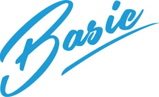

Performance & racing
Le Mans
Progettato per offrire una struttura leggera, carico massimo e versatilità senza pari, pensato per chi non vuole rinunciare a nulla.
Scopri Le Mans →Completamente in alluminio: leggeri, robusti e curati in ogni rifinitura.
Il resto del settore tratta il trasporto come una specifica tecnica. Noi lo trattiamo come ciò che è davvero: la custodia di valore in movimento.
Quattro fasi, un solo interlocutore. Dalla prima telefonata alla consegna sei sempre seguito — e lo restiamo anche dopo.
Ci racconti le tue auto, le tue rotte, le tue esigenze. Ascoltiamo prima di disegnare.
Disegniamo l'allestimento su misura: layout, materiali, finiture, optional.
Lo costruiamo a mano nella nostra officina di Pozzolo sul Mincio.
Te lo consegniamo pronto, collaudato, e restiamo al tuo fianco nel tempo.
Ogni modello nasce per un uso specifico: dalla pista al trasporto riservato, fino al recupero d'epoca.
Progettato per offrire una struttura leggera, carico massimo e versatilità senza pari, pensato per chi non vuole rinunciare a nulla.
Scopri Le Mans →Furgonato chiuso, nessuna vetrina. Quello che trasporti resta una cosa fra te e il destinatario.
Scopri Privacy →La linea del Type H, la meccanica di oggi. Un mezzo che nessuno smette di guardare mentre lavora.
Scopri Type H →Trascina per vedere gli altri
Per vederne altri, @startruckitalia su Instagram

5 passaggi. Alla fine invii la richiesta direttamente al nostro team — nessun account necessario.
In base al peso complessivo cambia la patente necessaria per la guida.
Fino a 3,5 t di massa complessiva. Guidabile con patente auto standard.
Richiede patente C. Maggiore portata e più veicoli trasportabili.
Su quale telaio verrà realizzato l'allestimento?
Scegli lo stile più adatto al tuo utilizzo.

Aperto, rapido, versatile.

Chiuso, riservato, protetto.

Stile vintage industrial.
Seleziona tutto ciò che ti serve: dove possiamo, ti mostriamo il pezzo sul mezzo. Puoi aggiungere altro nelle note al passo successivo.
Ultimo passaggio: ti ricontattiamo per confermare i dettagli del preventivo.
Cliccando "Invia configurazione" si aprirà il tuo client email con tutti i dettagli già compilati, pronti per essere inviati a startruck@outlook.it.
Performance & racing
Progettato per offrire una struttura leggera, carico massimo e versatilità senza pari, pensato per chi non vuole rinunciare a nulla.
L'allestimento
Grazie alla struttura interamente in alluminio, Le Mans garantisce una leggerezza eccezionale e un carico utile fino a 1,5 tonnellate: tutta la capacità che ti serve, con la semplice patente B. È compatibile con i principali marchi del settore e si adatta alle esigenze della tua flotta senza chiederti di cambiare abitudini.
Il mezzo da vicino
Niente è lì per caso: ogni scelta costruttiva nasce da un problema vero incontrato su strada.
Cosa c'è a bordo
Pianale 5.000 × 2.130 mm
Il piano di carico di Le Mans: alluminio estruso, superficie antiscivolo e punti di ancoraggio distribuiti su tutta la lunghezza.
Si sfilano da sotto il pianale e rientrano a filo: nessun ingombro esterno, nessun pezzo da caricare a parte.
Scorre lateralmente per allinearsi all’auto invece di costringere l’auto ad allinearsi a lui. Tiro sempre dritto.
Più leggera dell’acciaio e più sicura in caso di rottura: non frusta. Si maneggia a mani nude.
Illuminano l’area di lavoro dietro al mezzo. Carico e scarico al buio senza torce né improvvisazione.
Profilo del mezzo sempre leggibile agli altri, anche con poca luce e in manovra.
Quattro cinghie a cricchetto con ganci dedicati agli ancoraggi del pianale. Incluse, non un accessorio.
Per chi carica ogni giorno e non può permettersi di aspettare. Comando a distanza e tiro più deciso sulle vetture pesanti.
Riduce l’angolo di attacco: utile con le auto ribassate, dove ogni grado in meno è un paraurti salvato.
Ricavata nel sottopianale, chiusa a chiave. Cinghie e attrezzi restano a bordo senza rubare spazio al carico.
Barre LED aggiuntive lungo il pianale: carichi e scarichi di notte con la stessa sicurezza del giorno.
Alloggiamento sotto telaio, fuori dalla vista e fuori dall’area di carico.
Il mezzo diventa il tuo biglietto da visita: colori, logo e finiture studiati con te.

Più iconici


Domande frequenti
Le domande che ci fanno più spesso. Se non trovi la tua, chiamaci: rispondiamo noi, non un centralino.
Lavoriamo sui principali telai in commercio: Iveco, Mercedes, MAN, Volkswagen, Renault, Peugeot, Citroën, Fiat, Nissan, Ford e Maxus. Se il tuo mezzo non è in elenco scrivici: nella maggior parte dei casi troviamo comunque la soluzione.
No. Le Mans è progettato attorno al limite delle 3,5 tonnellate: struttura interamente in alluminio, peso contenuto e carico utile fino a 1,5 tonnellate. Si guida con la patente B.
Dipende dall’allestimento e dalla disponibilità del telaio. Dopo il sopralluogo ti diamo una finestra di consegna precisa e la manteniamo: preferiamo dire una data vera piuttosto che una comoda.
Entrambe le cose. Puoi portarci il tuo telaio oppure ce ne occupiamo noi, seguendo l’ordine e la pratica dal primo all’ultimo passaggio.
Sì. Ogni mezzo esce dalla nostra officina con la pratica di omologazione completa e i documenti pronti per la circolazione.
Sì, e non è un servizio a parte: chi ha costruito il tuo allestimento è la stessa persona che risponde al telefono se un anno dopo hai bisogno di un ricambio o di una regolazione.
Le altre linee
Parliamone
CONTATTACI
Trasporto confidenziale
Furgonato chiuso, nessuna vetrina. Quello che trasporti resta una cosa fra te e il destinatario.
L'allestimento
Privacy nasce per chi sposta auto che non devono essere viste: prototipi, vetture da collezione, consegne che richiedono riservatezza. Il vano è completamente chiuso e coibentato, l’accesso è controllato e dall’esterno il mezzo non racconta nulla del suo contenuto. La stessa cura costruttiva di Le Mans, applicata alla discrezione.
Il mezzo da vicino
Niente è lì per caso: ogni scelta costruttiva nasce da un problema vero incontrato su strada.
Cosa c'è a bordo
Il piano di carico di Privacy: alluminio estruso, superficie antiscivolo e punti di ancoraggio distribuiti su tutta la lunghezza.
Si sfilano da sotto il pianale e rientrano a filo: nessun ingombro esterno, nessun pezzo da caricare a parte.
Scorre lateralmente per allinearsi all’auto invece di costringere l’auto ad allinearsi a lui. Tiro sempre dritto.
Più leggera dell’acciaio e più sicura in caso di rottura: non frusta. Si maneggia a mani nude.
Illuminano l’area di lavoro dietro al mezzo. Carico e scarico al buio senza torce né improvvisazione.
Profilo del mezzo sempre leggibile agli altri, anche con poca luce e in manovra.
Quattro cinghie a cricchetto con ganci dedicati agli ancoraggi del pianale. Incluse, non un accessorio.
Temperatura sotto controllo per vetture da collezione e verniciature delicate.
Accesso al vano riservato a chi deve averlo. Nessuna chiave che gira per l’officina.
Posizione del veicolo sempre verificabile durante il trasferimento.
Riduce l’angolo di attacco: utile con le auto ribassate, dove ogni grado in meno è un paraurti salvato.
Ricavata nel sottopianale, chiusa a chiave. Cinghie e attrezzi restano a bordo senza rubare spazio al carico.
Barre LED aggiuntive lungo il pianale: carichi e scarichi di notte con la stessa sicurezza del giorno.

Più iconici


Domande frequenti
Le domande che ci fanno più spesso. Se non trovi la tua, chiamaci: rispondiamo noi, non un centralino.
Lavoriamo sui principali telai in commercio: Iveco, Mercedes, MAN, Volkswagen, Renault, Peugeot, Citroën, Fiat, Nissan, Ford e Maxus. Se il tuo mezzo non è in elenco scrivici: nella maggior parte dei casi troviamo comunque la soluzione.
No. Le Mans è progettato attorno al limite delle 3,5 tonnellate: struttura interamente in alluminio, peso contenuto e carico utile fino a 1,5 tonnellate. Si guida con la patente B.
Dipende dall’allestimento e dalla disponibilità del telaio. Dopo il sopralluogo ti diamo una finestra di consegna precisa e la manteniamo: preferiamo dire una data vera piuttosto che una comoda.
Entrambe le cose. Puoi portarci il tuo telaio oppure ce ne occupiamo noi, seguendo l’ordine e la pratica dal primo all’ultimo passaggio.
Sì. Ogni mezzo esce dalla nostra officina con la pratica di omologazione completa e i documenti pronti per la circolazione.
Sì, e non è un servizio a parte: chi ha costruito il tuo allestimento è la stessa persona che risponde al telefono se un anno dopo hai bisogno di un ricambio o di una regolazione.
Le altre linee
Parliamone
CONTATTACI
Aspetto vintage
La linea del Type H, la meccanica di oggi. Un mezzo che nessuno smette di guardare mentre lavora.
L'allestimento
Type H è l’allestimento per chi vuole che il trasporto faccia parte del racconto: le nervature e le proporzioni dell’originale, costruite su un telaio moderno e affidabile. Nato per showroom, eventi, club e collezioni — dove il mezzo che arriva conta quanto l’auto che scarica.
Il mezzo da vicino
Niente è lì per caso: ogni scelta costruttiva nasce da un problema vero incontrato su strada.
Cosa c'è a bordo
Il piano di carico di Type H: alluminio estruso, superficie antiscivolo e punti di ancoraggio distribuiti su tutta la lunghezza.
Si sfilano da sotto il pianale e rientrano a filo: nessun ingombro esterno, nessun pezzo da caricare a parte.
Scorre lateralmente per allinearsi all’auto invece di costringere l’auto ad allinearsi a lui. Tiro sempre dritto.
Più leggera dell’acciaio e più sicura in caso di rottura: non frusta. Si maneggia a mani nude.
Illuminano l’area di lavoro dietro al mezzo. Carico e scarico al buio senza torce né improvvisazione.
Profilo del mezzo sempre leggibile agli altri, anche con poca luce e in manovra.
Quattro cinghie a cricchetto con ganci dedicati agli ancoraggi del pianale. Incluse, non un accessorio.
Palette storiche o colore su campione: il tono giusto cambia tutto il mezzo.
Dettagli a vista rifiniti a mano, dove l’occhio cade per primo.
Per showroom ed eventi: il vano diventa spazio di presentazione.
Ricavata nel sottopianale, chiusa a chiave. Cinghie e attrezzi restano a bordo senza rubare spazio al carico.
Barre LED aggiuntive lungo il pianale: carichi e scarichi di notte con la stessa sicurezza del giorno.
Alloggiamento sotto telaio, fuori dalla vista e fuori dall’area di carico.

Più iconici


Domande frequenti
Le domande che ci fanno più spesso. Se non trovi la tua, chiamaci: rispondiamo noi, non un centralino.
Lavoriamo sui principali telai in commercio: Iveco, Mercedes, MAN, Volkswagen, Renault, Peugeot, Citroën, Fiat, Nissan, Ford e Maxus. Se il tuo mezzo non è in elenco scrivici: nella maggior parte dei casi troviamo comunque la soluzione.
No. Le Mans è progettato attorno al limite delle 3,5 tonnellate: struttura interamente in alluminio, peso contenuto e carico utile fino a 1,5 tonnellate. Si guida con la patente B.
Dipende dall’allestimento e dalla disponibilità del telaio. Dopo il sopralluogo ti diamo una finestra di consegna precisa e la manteniamo: preferiamo dire una data vera piuttosto che una comoda.
Entrambe le cose. Puoi portarci il tuo telaio oppure ce ne occupiamo noi, seguendo l’ordine e la pratica dal primo all’ultimo passaggio.
Sì. Ogni mezzo esce dalla nostra officina con la pratica di omologazione completa e i documenti pronti per la circolazione.
Sì, e non è un servizio a parte: chi ha costruito il tuo allestimento è la stessa persona che risponde al telefono se un anno dopo hai bisogno di un ricambio o di una regolazione.
Le altre linee
Parliamone
CONTATTACI